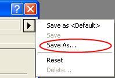
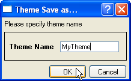
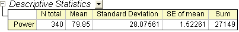
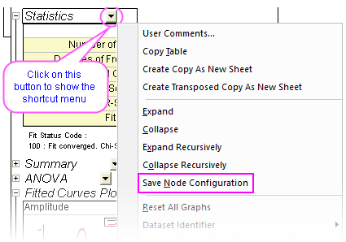
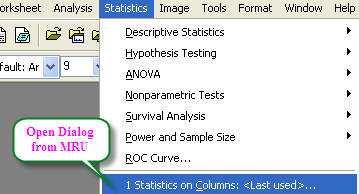
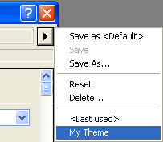
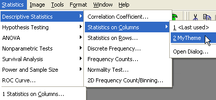

Analysedesigns
AnalysisThemes
Zusammenfassung
In Origin 8 können die Analyseverfahren mit Designs durchgeführt werden. Designs sind tatsächlich XML-Dateien, die Einstellungen in dem Analysedialogfeld speichern. Nach Durchführen der Analyse gibt es z.B. ein Design mit dem Namen <Zuletzt verwendet> für dieses Dialogfeld, das die zuletzt verwendeten Einstellungen speichert. Sie können dem Design auch einen anderen Namen geben und diesen in Zukunft verwenden.
Der Dialog Spaltenstatistik wird in diesem Tutorial verwendet, um Ihnen zu zeigen, wie man Analysedesigns erstellt und verwendet. Diese Analyse liefert eine deskriptive Statistik über die Daten, wie z. B den Mittelwert, die Standardabweichung, Minimum, Maximum und mehr. Für die Anschauung kann auch in einem Analyseergebnisbericht ein Histogramm oder ein Boxdiagramm erstellt werden.
Origin-Version mind. erforderlich: Origin 8.0 SR6
Was Sie lernen werden
Dieses Tutorial zeigt Ihnen, wie Sie:
- einfache deskriptive Statistiken durchführen
- ein Analysedesign erstellen
- das Design verwenden
Schritte
Analyseverfahren als Design speichern
- Öffnen Sie eine neue Arbeitsmappe und importieren Sie die Datei Samples\Statistics\automobile.dat.
- Markieren Sie Spalte C und verwenden Sie den Menüpunkt Deskriptive Statistik: Deskriptive Statistik: Spaltenstatistik, um den Dialog zu öffnen.
- Erweitern Sie auf der Registerkarte Eigenschaften den Zweig Momente und aktivieren Sie N gesamt, Mittelwert, Standardabweichung, SE des Mittelwerts und die Summe.
- Erweitern Sie den Knoten Diagramme und aktivieren Sie die Kontrollkästchen Histogramme und Box-Diagramme. Sie sehen dann im Analyseergebnisbericht das entsprechende Histogramm und die Box-Diagramme.
- Ihre Auswahl in diesem Analysedialog können Sie als Design speichern, so dass Sie den Vorgang leicht wiederholen können. Klicken Sie auf den Pfeil rechts vom Dialogdesign und wählen Sie Speichern unter ....

..., um diesen Dialog aufzurufen:

- Geben Sie einen geeigneten Namen ein, wie zum Beispiel "MeinDesign", und klicken Sie auf OK.
- Klicken Sie auf die Schaltfläche OK im Dialog Spaltenstatistik. Die Ergebnisse werden in einem neuen Arbeitsblatt mit dem Namen DescStatsOnCols1 aufgeführt.

 |
Sie können ein benutzerdefiniertes Dialogdesign als Standard speichern, so dass es jedes Mal verwendet wird, wenn Sie den Dialog der Analyseoperation öffnen. Dazu wählen Sie Speichern als <Standard>, um das aktuelle Dialogdesign als Standardeinstellung dieses Dialogs zu speichern. Es ist auch möglich, das Standarddesign zu löschen und den Systemstandard wiederherzustellen. Dazu wählen Sie Löschen im Ausklappmenü.
|
|
Sie können auch Ihre Konfiguration des Analyseberichtsblatts in eine Designdatei speichern, indem Sie den Ausgabezweig erweitern bzw. minimieren und dann im Shortcutmenü Konfiguration des Zweiges speichern wählen. Weitere Informationen finden Sie unter Konfiguration des Zweiges speichern in dieser Tabelle.

|
Analyseverfahren mit dem Design wiederholen
Wenn Sie einmal ein Design abgespeichert haben, können Sie es vielseitig anwenden. Zum Beispiel können Sie Spalte E markieren und für sie die gleichen statistischen Analysen durchführen.
- Öffnen Sie den Dialog Spaltenstatistik über die Zuletzt verwendeten Elemente unten im Menü Statistik. Die meisten der Dialoge, auf die vom Menü aus zugegriffen werden kann, werden über die Liste Zuletzt verwendet gefunden.

Wenn Sie den Dialog von hier aus öffnen, ist das Standarddesign <Zuletzt verwendet>. Um MeinDesign zu benutzen, wählen Sie MeinDesign aus dem Kontextmenü Dialogdesign. Die Einstellungen von diesem Design werden dann im Dialogfeld angezeigt. Klicken Sie auf OK, um die Analyse durchzuführen.

- Ein anderer Weg dieses Analysedesign anzuwenden, ist den verschachtelten Menüaufbau zu verwenden. Sobald Sie einen Analysedialog zum ersten Mal nach der Installation verwenden oder ein Design für einen Dialog speichern, wird eine neue Menüebene hinzugefügt. Sie können im Menü MeinDesign auswählen.

Wenn Sie Dialog öffnen... auswählen, wird der Dialog mit dem Dialogdesign <Systemstandard> geöffnet. Um die Einstellungen von Ihrem Design zu ändern, können Sie Ihren Designnamen aus dem Kontextmenü Dialogdesign wählen, Änderungen machen und das Design neu speichern. Alternativ können Sie zum Öffnen eines Dialog mit einem gespeicherten Design ohne Durchführen der Analyse, die Shift-Taste gedrückt halten, während Sie das Design aus dem Menü auswählen. Dadurch wird der Dialog mit Ihrem Design aufgerufen, so dass Sie die gewünschten Änderungen vornehmen können.